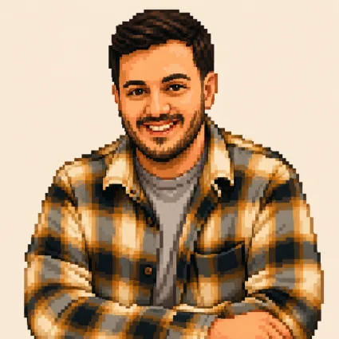

Hello, I'm
Antonios Stergiopoulos
- antonis.stergiopoulos@outlook.com
- Hertfordshire, UK
◄ About ►
Game developer with an MSc in Computer Games Technology, a BSc in Computer Science, and 4+ years of professional game programming experience. I have worked across shipped commercial titles, gameplay systems, editor tooling, platform support, patches, and build pipelines, with a strong focus on Unity and C#, alongside professional and academic experience with Unreal Engine, C++, DirectX, and HLSL.
Outside of work, I’m a long-time game and board game enthusiast, and I enjoy building polished, readable, and maintainable interactive experiences.
Game Programming
Gameplay systems, feature implementation, and long-term development support across commercial and personal game projects.
Tools & Pipelines
Editor tools, workflow improvements, build pipelines, and technical support that help projects move faster and stay maintainable.
Platform Support
Platform conversions, porting support, patches, build pipelines, and release preparation across shipped Unity and Unreal Engine titles.
◄ Skills ►
◄ Quest Log ►
Education
MSc, Computer Games Technology
Abertay University Sept 2020 — Sept 2021Postgraduate degree focused on advanced game development, covering gameplay programming, networked games, applied mathematics, artificial intelligence, procedural methods, and research-led development.
- Developed Unity and C# projects across gameplay, networking, AI, procedural systems, and mixed reality
- Built C++/HLSL DirectX projects focused on rendering, playable scenes, and procedural generation
- Created a mixed reality thesis project using Unity and HoloLens 2
- Worked on group and individual projects with a focus on technical implementation
BSc, Digital Systems
University of Piraeus Sept 2012 — Jul 2020Undergraduate degree with a computer science focus, covering programming, mathematics, data structures, algorithms, artificial intelligence, databases, and software development.
- Built projects using C#, Java, SQL, web technologies, and Unity
- Completed an augmented reality thesis project using Unity and Vuforia
- Developed a broad technical foundation across software, systems, and applied computing
Awards
AI Gaming Tournament for Student Partners
Microsoft Nov 2019Awarded first place in a Microsoft Student Partners AI gaming tournament for building the most efficient solution in both speed and analysis.
- Built an automated solution for matching cards as quickly as possible
- Used Azure Computer Vision to analyze card images and text
- Recognized for technical efficiency and problem-solving performance
Volunteer Experience
Educator for the Hour of Code
Code.org Dec 2014 & Dec 2015Volunteered as an educator for the Hour of Code initiative, introducing elementary school students to programming through Scratch and puzzle-based activities.
Work
Game Developer
Secret Level StudiosWorking closely with PQube
Jan 2024 — PresentDeveloping gameplay systems, editor tools, build pipeline improvements, and production-ready features for commercial Unity projects, while also supporting patches and platform-specific work where needed.
- Implemented gameplay systems and production features for active game projects
- Built editor tools and workflow improvements to support faster development
- Supported build pipelines, patches, and release preparation
- Provided technical ownership and planning support on selected projects
- Led development on When the Light Dies during its transition and final development stages
- Worked on: Kitaria Fables 2, Kitaria Fables, When the Light Dies, Knight vs Giant: The Broken Excalibur, Potion Permit
- Platforms: Steam, PS5, PS4, Xbox Series X|S, Xbox One
Junior Programmer
Team17 Mar 2022 — Nov 2023Worked on commercially shipped titles across Unity/C# and Unreal Engine/C++ projects, supporting platform conversions, feature implementation, maintenance, and release-focused development.
- Implemented platform-specific features and conversion work across Unity and Unreal Engine projects
- Fixed bugs and supported long-term maintenance across multiple shipped titles
- Contributed to feature development and platform release requirements
- Worked on: Overcooked! 2, Hell Let Loose, Thymesia, The Knight Witch, The Serpent Rogue, Hokko Life, Crown Trick
- Platforms: WinStore, macOS, Linux, Steam, GOG, Epic Games Store, Switch, Xbox Series X|S, Xbox One, PS5, PS4, Luna, Alibaba
Microsoft Learn Student Ambassador
Microsoft Jun 2014 — Sept 2021Supported university teaching, created technical learning material, and represented Microsoft in student and developer community activities.
- Supported university professors during lectures and lab sessions
- Created tutorials and learning material for StudentGuru Unipi
- Worked with C#, Visual Studio, Unity, and UWP application development
- Presented and supported Microsoft-hosted student events
Web Developer
NCSR "DEMOKRITOS" Nov 2016 — May 2017Developed and maintained a public-facing website for a European healthcare event, with a focus on frontend updates, content maintenance, and reliable delivery.
- Built and maintained website pages using JavaScript, HTML, and CSS
- Supported ongoing updates for event information and public-facing content
Software Developer Internship
NCSR "DEMOKRITOS" Apr 2016 — June 2016Supported development and maintenance of a research-focused healthcare web platform, working across AngularJS frontend features, C# service integration, and web service testing.
- Developed and maintained web platform features for iwelli
- Worked with AngularJS, C#, MySQL, and SOAP-based services
- Tested web services using SoapUI
- Helped verify communication between the web platform, Android app, and connected devices